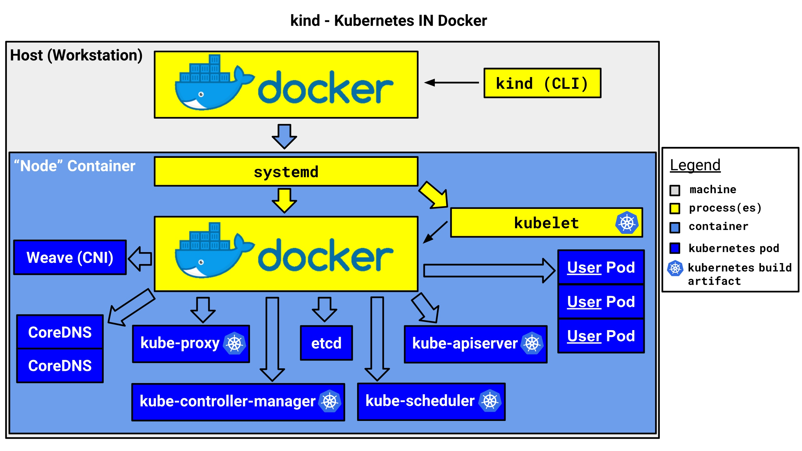

Intro to Kind
Kubernetes IN Docker - local clusters for testing Kubernetes
Brief
Kind(Kubernetes IN Docker) 是一个用来快速创建和测试 kubernetes 的工具，Kind 把环境的依赖降低到了最小，仅需要机器安装了 docker 即可。
Kind 可以做什么
- 快速创建一个或多个
kubernetes集群（几分钟） - 支持
ha master部署高可用的kubernetes集群 - 支持从源码构建并部署一个
kubernetes集群 - 可以快速低成本体验一个最新的
kubernetes集群，并支持kubernetes的绝大部分功能 - 支持本地离线运行一个多节点集群
Kind 有哪些优势
- 最小的安装依赖，仅需要安装
docker即可 - 使用快速简单，使用
kind cli工具即可快速创建集群 - 使用
container来 mockkubernetes node - 内部使用
kubeadm的官方主流部署工具 - 使用了
containerd - 通过了
cncf官方的k8s conformance测试
Usage
GO111MODULE="on" go get sigs.k8s.io/kind@v0.3.0 && kind create cluster
How it work
Kind 使用一个 container 来模拟一个 node，在 container 里面跑了 systemd ，并用 systemd 托管了 kubelet 以及 containerd，然后容器内部的 kubelet 把其他 k8s 组件，比如 kube-apiserver, etcd, cni 等组件跑起来
可以通过配置文件的方式，来通过创建多个 container 的方式，来模拟创建多个 node，并以这些 node 来构建一个多节点的 kubernetes 集群
Kind 内部使用了 kubeadm 这个工具来做集群的部署，包括 ha master 的高可用集群，也是借助 kubeadm 提供的 aplha 特性提供的。同时，在 ha master 下，额外部署了一个 nginx 用来提供负载均衡 vip

（https://kind.sigs.k8s.io/docs/design/initial/）
镜像构建
Kind 的镜像分为两个，一个 base 镜像，一个 node 镜像
base 镜像
base 镜像目前使用了 ubuntu:19.04 作为基础镜像，做了下面的调整：
- 安装
systemd相关的包，并调整一些配置以适应在容器内运行 - 安装
k8s运行时的依赖包，比如conntracksocatcni - 安装容器运行环境，比如
containerdcrictl - 配置自己的
ENTRYPOINT脚本，以适应和调整容器内运行的问题
具体的逻辑，可以参考构建的 Dockerfile
node 镜像
node 镜像的构建比较复杂，目前是通过运行 base 镜像，并在 base 镜像内执行操作，再保存此容器内容为镜像的方式来构建的，包含的操作有：
- 构建
Kubernetes相关资源（比如二进制文件和镜像） - 运行一个用于构建的容器
- 把构建的
Kubernetes相关资源复制到容器里 - 调整部分组件配置参数，以支持在容器内运行
- 预先拉去运行环境需要的镜像
- 通过
docker commit方式保存当前的构建容器为node镜像
具体的逻辑，可以参考 node.go
集群创建
Kind 创建集群的基本过程为:
- 根据传入的参数，来创建
container，分为control node和worker node两种（如果是ha master，还有一个loadbalancer node） - 如果需要，配置
loadbalancer的配置，主要是nginx配置文件 - 生成
kubeadm配置 - 对于第一个控制节点，使用
kubeadm init初始化单节点集群 - 配置安装
cni插件 - 配置存储（实际是安装了一个使用
hostpath的storageclass） - 其他的控制节点，通过
kubeadm join --experimental-control-plane的方式来扩容控制节点 - 通过
kubeadm join扩容其他的工作节点 - 等待集群创建完成
- 生成访问配置，打印使用帮助
具体的创建流程，可以参考代码 create.go
这里关于每个容器，是如何作为 node 跑起来的，可以简单讲解些原理：
根据不同的角色，调用不同的函数创建节点
(https://github.com/kubernetes-sigs/kind/blob/master/pkg/cluster/internal/create/nodes.go#L196)
// TODO(bentheelder): remove network in favor of []cri.PortMapping when that is in
func (d *nodeSpec) Create(clusterLabel string) (node *nodes.Node, err error) {
// create the node into a container (docker run, but it is paused, see createNode)
// TODO(bentheelder): decouple from config objects further
switch d.Role {
case constants.ExternalLoadBalancerNodeRoleValue:
node, err = nodes.CreateExternalLoadBalancerNode(d.Name, d.Image, clusterLabel, d.APIServerAddress, d.APIServerPort)
case constants.ControlPlaneNodeRoleValue:
node, err = nodes.CreateControlPlaneNode(d.Name, d.Image, clusterLabel, d.APIServerAddress, d.APIServerPort, d.ExtraMounts)
case constants.WorkerNodeRoleValue:
node, err = nodes.CreateWorkerNode(d.Name, d.Image, clusterLabel, d.ExtraMounts)
default:
return nil, errors.Errorf("unknown node role: %s", d.Role)
}
return node, err
}
节点（容器）创建时，通过配置 --privileged，挂载 tmpfs，修改主机名等，来运行节点
(https://github.com/kubernetes-sigs/kind/blob/master/pkg/cluster/nodes/create.go#L124)
func createNode(name, image, clusterLabel, role string, mounts []cri.Mount, extraArgs ...string) (handle *Node, err error) {
runArgs := []string{
"-d", // run the container detached
"-t", // allocate a tty for entrypoint logs
// running containers in a container requires privileged
// NOTE: we could try to replicate this with --cap-add, and use less
// privileges, but this flag also changes some mounts that are necessary
// including some ones docker would otherwise do by default.
// for now this is what we want. in the future we may revisit this.
"--privileged",
"--security-opt", "seccomp=unconfined", // also ignore seccomp
"--tmpfs", "/tmp", // various things depend on working /tmp
"--tmpfs", "/run", // systemd wants a writable /run
// some k8s things want /lib/modules
"-v", "/lib/modules:/lib/modules:ro",
"--hostname", name, // make hostname match container name
"--name", name, // ... and set the container name
// label the node with the cluster ID
"--label", clusterLabel,
// label the node with the role ID
"--label", fmt.Sprintf("%s=%s", constants.NodeRoleKey, role),
}
// pass proxy environment variables to be used by node's docker deamon
proxyDetails := getProxyDetails()
for key, val := range proxyDetails.Envs {
runArgs = append(runArgs, "-e", fmt.Sprintf("%s=%s", key, val))
}
// adds node specific args
runArgs = append(runArgs, extraArgs...)
if docker.UsernsRemap() {
// We need this argument in order to make this command work
// in systems that have userns-remap enabled on the docker daemon
runArgs = append(runArgs, "--userns=host")
}
err = docker.Run(
image,
docker.WithRunArgs(runArgs...),
docker.WithMounts(mounts),
)
// we should return a handle so the caller can clean it up
handle = FromName(name)
if err != nil {
return handle, errors.Wrap(err, "docker run error")
}
return handle, nil
}
More
Kind 是一个比较简单有趣的项目，Kind 的 scope 定的比较明确和具体，也定的比较小，其实借助 Kind 或者 Kind 的思想，可以做更多的事情，比如：
- 在单节点部署自己的上层平台
- 借助容器 mock 节点的方式，优化现有的测试方案
- 自动化的部署测试
- 自动化的 e2e 测试
扩展阅读
Kind 借助 kubeadm 的新特性实现了 ha master 高可用集群，kubeadm 借助 join 的方式来扩容 master 节点达到 ha master，其实内部的实现方式也有好有坏，有兴趣的可以参考 kubeadm 源码
Intro to Tekton
Kubernetes-native CI/CD building blocks.
Install
- 获取一个 Kubernetes 集群，可以通过:
- 谷歌云上创建一个 GKE 集群
- k8s playground 可以快速测试
- docker for mac/windows 新版的 docker 提供了一个 Kubernetes 集群，可以用于本地测试
- kind Kubernetes IN Docker 可以快速构建和安装 Kubernetes 集群，用于自动化测试
- （确保当前操作的用户有 cluster-admin 权限）
- 安装 Tekton:
kubectl apply --filename https://storage.googleapis.com/tekton-releases/latest/release.yaml
Core concepts
Task: 作为 pipeline 的基本单位，定义了一组需要运行的操作(steps)；可以多个 task 组成 pipeline，也可以独立运行
Pipeline: 用来编排一个或多个 task，并配置运行 task 需要的资源以及参数
TaskRun: 用来关联和触发运行 task
PipelineRun: 用来关联和触发运行 pipeline
PipelineResource: 用来定义执行 task 或者 pipeline 时需要的资源，比如 git repo，镜像等
Workflow
- 定义自己的 Task，包括定义具体要运行的操作（
steps），输入输出，数据卷和容器模板steps提供了一个运行的容器环境，以及需要进行的操作；一个task可以有多个step，每一个step顺序执行inputs/outputs提供了执行流水线时需要的资源及变量配置，比如可以预先拉取好 git repo，build 镜像等volumes提供数据卷给构建的容器使用，可以用于存储或者传递数据等，或者读取配置文件containerTemplate提供模板的功能，比如定义环境变量，可以作用于每一个 step 的执行环境中
- 创建
TaskRun来关联和触发定义好的Task- 可以通过
taskRef的方式来管理task；或者直接通过inline的模式，定义task的taskSpec - 可以指定
serviceAccount来用于做认证（比如拉取 git 仓库的代码）；未指定时，默认使用当前 namespace 的 default service account - 可以指定
timeout来配置超时时间 inputs/outputs定义执行task时的变量以及资源- 可以通过修改
status为TaskRunCancelled来取消任务
- 可以通过
- 也可以定义自己的
Pipeline，通过流水线来编排多个taskresources定义了执行pipeline时用到的资源tasks定义了流水线要执行的任务以及任务的编排关系- 通过
from或runAfter可以隐示或者显示的定义执行的任务顺序 - 没有依赖或者顺序相关的任务，会并行执行
retries定义了任务失败时重试的次数，比如临时网络中断造成的构建失败；默认是不重试的
- 创建
PipelineRun来关联和触发定义好的Pipeline- 通过
pipelineRef来管理pipeline - 可以指定
serviceAccount来用于做认证（比如拉取 git 仓库的代码）；未指定时，默认使用当前 namespace 的 default service account - 可以指定
timeout来配置超时时间 - 可以指定
resources来定义执行pipeline时用到的资源 - 可以通过修改
status为PipelineRunCancelled来取消流水线
- 通过
Auth
可以通过配置 ServiceAccount 以及关联的 secret 的方式，来方便配置用于访问 git 或者 docker 镜像仓库的认证信息。基本流程如下：
- 创建一个
ServiceAccount，包含了用到的认证资源信息，通过给出 secret name 的方式，与实际的 auth 配置绑定 - 创建
secret，包含basic-auth和ssh-auth两种方式，提供用于登陆镜像仓库或者访问 git 仓库需要的用户名密码信息；或者提供用于访问git 仓库的 ssh key 信息 - 在创建
TaskRun或者PipelineRun时，指定使用的ServiceAccount。在后续执行task时，会在执行task前，预先把认证的配置文件，放置到运行的容器环境中 - 在执行
task时，直接拉去代码仓库或者镜像仓库即可
In one map

Demo(TODO)
build tekton with tekton
build k8s from source and run conformance test with tekton and kind
Anything except the tekton core
- UI: 提供创建和管理的界面 e.g. dashboard
- 多租户: 支持不同用户、不同租户的权限控制和管理
- 资源 qos: 限制资源消耗，保证集群稳定性
- API: 提供 api 接口供外部调用，比如使用 nirvana
- trigger: 支持 github gitlib 条件或者手动触发
- plugin: 支持 plugin 功能以支持更多的需求，比如 svn 的处理
Next
Debug for go program (kubelet open random port)
缘起
发现某个版本开始，kubelet 每次运行后，会启动一个随机的 TCP 端口，绑定到 127.0.0.1 的本地端口上，可以通过 http 方式访问，返回都是 404，比如像下面这样的：
[root@dev test]# ss -lptn | grep kubelet
LISTEN 0 128 127.0.0.1:10248 *:* users:(("kubelet",pid=5854,fd=20))
LISTEN 0 128 127.0.0.1:37231 *:* users:(("kubelet",pid=5854,fd=7))
LISTEN 0 128 :::10250 :::* users:(("kubelet",pid=5854,fd=17))
LISTEN 0 128 :::10255 :::* users:(("kubelet",pid=5854,fd=19))
[root@dev test]# curl 127.0.0.1:37231/hi
404: Page Not Found
非固定端口的形式十分诡异，所以想要弄明白怎么回事。
破案
google first
尝试以 kubelet kubernetes k8s random port 127.0.0.1 localhost 等关键字搜索，好像没什么相关内容
upstream then
去翻了下社区 issue ，以上面关键字搜索，好像也没什么相关内容
how to
既然不是已知问题，那么就尝试从现象来找线索
对象: kubelet 进程，是一个 golang 编写的程序
行为: 监听了本地随机端口，协议是 tcp
线索:
随机代表在 listen 时，1. 指定了一个随机端口；2. 指定的端口是0golanggo 程序里面的监听某个端口的行为，通常是调用的net.Listen()方法
next
通常，debug 到这一步时，next 就没有固定套路了。
比如，尝试搜索 kubernetes 源码里面，所有涉及 net.Listen() 调用的地方，筛选可能的配置端口是 0 的地方，发现了一些有趣的测试代码包含 net.Listen("tcp", "127.0.0.1:0") 这类随机端口，是用来测试的
more
通常，debug 到这个节点，会有些不管正确还是错误的猜测，需要更多的信息来验证和排查。这个时候，可以人造些线索，比如：
- 调高
kubelet日志等级，看看能否提供更多的信息 - 访问一个固定的 path ，比如
127.0.0.1:37231/hahaha，看看日志里面是否会出现 - 尝试通过
strace来看看发生了啥（单strace是 syscall 级别的，信息不一定有用；比如能看到hahaha关键字了，但是在readwrite的 syscall 里，还是不知道发生了什么）
again
到这里，看来常规途径都没啥好的线索，那么还是回到最初的确定的现象
发现某个版本开始，
kubelet每次运行后，会启动一个随机的 TCP 端口，绑定到127.0.0.1的本地端口上，可以通过 http 方式访问，返回都是404
既然上面用 strace 或者搜索源码都不太好找到线索，那么可以换个思路，或是换个工具
比如这里幻想着一个工具：
- 可以调试运行中的软件
- 可以在指定的地方触发
- 可以打印运行的参数/内存
这么想想 ，好像 gdb 是做这么一件事的利器。但是，gdb 好用么？？？
Delve
曾经用 gdb 调试过 kubelet，因为默认 release 版本的 kubelet 缺少调试的符号表，使用起来太过困难。
依旧 google 一波，关键字 golang debug，发现官方的 Debugging Go Code with GDB 上面推荐了一个工具，叫做 Delve
Delve 的安装和使用文档就不多说，参考官方文档就好
尝试了一波，确实方便和强大，但还有最后一个问题，断点打在哪里呢？需要在监听这个端口的调用那里来打一个断点，来确认是这个调用监听的这个端口；但如果知道了这个调用在哪，我还打断点干啥。
如果解决鸡生蛋蛋生鸡的问题呢？不管鸡也不管蛋，直接断点到 net.Listen 这个调用
Debug
（正文开始了）
找好了工具，确定了方法，下面 debug 过程就顺风顺水了
加入 cmd/kubelet 目录，debug 模式运行 kubelet
[root@dev kubelet]# cd ~/go/src/k8s.io/kubernetes/cmd/kubelet/
[root@dev kubelet]# dlv debug .
Type 'help' for list of commands.
(dlv)
设置断点
(dlv) break net.Listen
Breakpoint 1 set at 0x61da48 for net.Listen() /usr/local/go/src/net/dial.go:672
等待断点触发
(dlv) continue
...
> net.Listen() /usr/local/go/src/net/dial.go:672 (hits goroutine(1):1 total:2) (PC: 0x61da48)
> net.Listen() /usr/local/go/src/net/dial.go:672 (hits goroutine(98):1 total:2) (PC: 0x61da48)
667: // The Addr method of Listener can be used to discover the chosen
668: // port.
669: //
670: // See func Dial for a description of the network and address
671: // parameters.
=> 672: func Listen(network, address string) (Listener, error) {
673: var lc ListenConfig
674: return lc.Listen(context.Background(), network, address)
675: }
676:
677: // ListenPacket announces on the local network address.
(dlv)
打印 listen 信息
(dlv) p address
"localhost:0"
查看调用栈
(dlv) bt
0 0x000000000061da48 in net.Listen
at /usr/local/go/src/net/dial.go:672
1 0x00000000025448f6 in k8s.io/kubernetes/pkg/kubelet/server/streaming.(*server).Start
at /root/go/src/k8s.io/kubernetes/pkg/kubelet/server/streaming/server.go:238
2 0x00000000041b1a12 in k8s.io/kubernetes/pkg/kubelet/dockershim.(*dockerService).Start.func1
at /root/go/src/k8s.io/kubernetes/pkg/kubelet/dockershim/docker_service.go:400
3 0x0000000000466451 in runtime.goexit
at /usr/local/go/src/runtime/asm_amd64.s:1333
分步执行，并对比前后 ss -lptn 的变化
(dlv) n
> net.Listen() /usr/local/go/src/net/dial.go:674 (PC: 0x61da7e)
669: //
670: // See func Dial for a description of the network and address
671: // parameters.
672: func Listen(network, address string) (Listener, error) {
673: var lc ListenConfig
=> 674: return lc.Listen(context.Background(), network, address)
675: }
676:
677: // ListenPacket announces on the local network address.
678: //
679: // The network must be "udp", "udp4", "udp6", "unixgram", or an IP
(dlv)
---
[root@dev test]# ss -lptn
State Recv-Q Send-Q Local Address:Port Peer Address:Port
LISTEN 0 128 *:22 *:* users:(("sshd",pid=3360,fd=3))
LISTEN 0 100 127.0.0.1:25 *:* users:(("master",pid=3728,fd=13))
LISTEN 0 128 :::22 :::* users:(("sshd",pid=3360,fd=4))
LISTEN 0 100 ::1:25 :::* users:(("master",pid=3728,fd=14))
---
(dlv) n
> k8s.io/kubernetes/pkg/kubelet/server/streaming.(*server).Start() /root/go/src/k8s.io/kubernetes/pkg/kubelet/server/streaming/server.go:238 (PC: 0x25448f6)
Values returned:
~r2: net.Listener(*net.TCPListener) *{
fd: *net.netFD {
pfd: (*internal/poll.FD)(0xc00030fa80),
family: 2,
sotype: 1,
isConnected: false,
net: "tcp",
laddr: net.Addr(*net.TCPAddr) ...,
raddr: net.Addr nil,},}
~r3: error nil
233: if !stayUp {
234: // TODO(tallclair): Implement this.
235: return errors.New("stayUp=false is not yet implemented")
236: }
237:
=> 238: listener, err := net.Listen("tcp", s.config.Addr)
239: if err != nil {
240: return err
241: }
242: // Use the actual address as baseURL host. This handles the "0" port case.
243: s.config.BaseURL.Host = listener.Addr().String()
(dlv)
---
[root@dev test]# ss -lptn
State Recv-Q Send-Q Local Address:Port Peer Address:Port
LISTEN 0 128 *:22 *:* users:(("sshd",pid=3360,fd=3))
LISTEN 0 100 127.0.0.1:25 *:* users:(("master",pid=3728,fd=13))
LISTEN 0 128 127.0.0.1:33375 *:* users:(("debug",pid=6847,fd=8))
LISTEN 0 128 :::22 :::* users:(("sshd",pid=3360,fd=4))
LISTEN 0 100 ::1:25 :::* users:(("master",pid=3728,fd=14))
到这里，就初步破案了，可以看到 dockershim 创建时，先启动了一个 streaming server，这个 kubelet random port 就是这个 streaming server 做的，初步看来是做 exec attach portforward 的
彩蛋
上面用 dlv 去跟踪断点时，并不是每次查看到的 listen 地址都是 "localhost:0"，比如多跑几次，可以看到
> net.Listen() /usr/local/go/src/net/dial.go:672 (hits goroutine(1):1 total:2) (PC: 0x61da48)
667: // The Addr method of Listener can be used to discover the chosen
668: // port.
669: //
670: // See func Dial for a description of the network and address
671: // parameters.
=> 672: func Listen(network, address string) (Listener, error) {
673: var lc ListenConfig
674: return lc.Listen(context.Background(), network, address)
675: }
676:
677: // ListenPacket announces on the local network address.
(dlv) bt
0 0x000000000061da48 in net.Listen
at /usr/local/go/src/net/dial.go:672
1 0x00000000018e22b5 in k8s.io/kubernetes/pkg/kubelet/util.CreateListener
at /root/go/src/k8s.io/kubernetes/pkg/kubelet/util/util_unix.go:53
2 0x00000000041b35c1 in k8s.io/kubernetes/pkg/kubelet/dockershim/remote.(*DockerServer).Start
at /root/go/src/k8s.io/kubernetes/pkg/kubelet/dockershim/remote/docker_server.go:60
3 0x00000000042791a8 in k8s.io/kubernetes/pkg/kubelet.NewMainKubelet
at /root/go/src/k8s.io/kubernetes/pkg/kubelet/kubelet.go:640
4 0x00000000042dabd6 in k8s.io/kubernetes/cmd/kubelet/app.CreateAndInitKubelet
at ./app/server.go:1100
5 0x00000000042d9efa in k8s.io/kubernetes/cmd/kubelet/app.RunKubelet
at ./app/server.go:990
6 0x00000000042d46fc in k8s.io/kubernetes/cmd/kubelet/app.run
at ./app/server.go:707
7 0x00000000042d2cf3 in k8s.io/kubernetes/cmd/kubelet/app.Run
at ./app/server.go:412
8 0x00000000042ddc53 in k8s.io/kubernetes/cmd/kubelet/app.NewKubeletCommand.func1
at ./app/server.go:261
9 0x000000000409ad8a in k8s.io/kubernetes/vendor/github.com/spf13/cobra.(*Command).execute
at /root/go/src/k8s.io/kubernetes/vendor/github.com/spf13/cobra/command.go:760
10 0x000000000409b72b in k8s.io/kubernetes/vendor/github.com/spf13/cobra.(*Command).ExecuteC
at /root/go/src/k8s.io/kubernetes/vendor/github.com/spf13/cobra/command.go:846
11 0x000000000409b02b in k8s.io/kubernetes/vendor/github.com/spf13/cobra.(*Command).Execute
at /root/go/src/k8s.io/kubernetes/vendor/github.com/spf13/cobra/command.go:794
12 0x00000000042dfde6 in main.main
at ./kubelet.go:43
13 0x0000000000435bd5 in runtime.main
at /usr/local/go/src/runtime/proc.go:201
14 0x0000000000466451 in runtime.goexit
at /usr/local/go/src/runtime/asm_amd64.s:1333
这是因为 goroutine 的原因，可能同时有多个地方触发了这个断点（这里就不破案了）；但是可能和 dlv 实现有关，只能断点到其中一个 goroutine 中，另外一个 goroutine 会继续跑（埋个坑）
如果查看断点时的 goroutine，就可以看到
(dlv) goroutines
* Goroutine 1 - User: /usr/local/go/src/net/dial.go:672 net.Listen (0x61da48) (thread 7034)
Goroutine 2 - User: /usr/local/go/src/runtime/proc.go:303 runtime.gopark (0x435fb4)
Goroutine 3 - User: /usr/local/go/src/runtime/proc.go:303 runtime.gopark (0x435fb4)
Goroutine 4 - User: /usr/local/go/src/runtime/lock_futex.go:228 runtime.notetsleepg (0x40ec57)
Goroutine 18 - User: /usr/local/go/src/runtime/proc.go:303 runtime.gopark (0x435fb4)
Goroutine 19 - User: /usr/local/go/src/runtime/proc.go:303 runtime.gopark (0x435fb4)
Goroutine 20 - User: /usr/local/go/src/runtime/proc.go:303 runtime.gopark (0x435fb4)
Goroutine 21 - User: /root/go/src/k8s.io/kubernetes/vendor/k8s.io/klog/klog.go:941 k8s.io/kubernetes/vendor/k8s.io/klog.(*loggingT).flushDaemon (0x94e6d3)
Goroutine 33 - User: /usr/local/go/src/runtime/sigqueue.go:139 os/signal.signal_recv (0x44bedc)
Goroutine 46 - User: /usr/local/go/src/runtime/proc.go:303 runtime.gopark (0x435fb4)
Goroutine 47 - User: /root/go/src/k8s.io/kubernetes/vendor/k8s.io/apiserver/pkg/server/signal.go:36 k8s.io/kubernetes/vendor/k8s.io/apiserver/pkg/server.SetupSignalHandler.func1 (0x1846e64)
Goroutine 48 - User: /root/go/src/k8s.io/kubernetes/vendor/k8s.io/apimachinery/pkg/util/wait/wait.go:145 k8s.io/kubernetes/vendor/k8s.io/apimachinery/pkg/util/wait.JitterUntil (0x10b0f2a)
Goroutine 63 - User: /usr/local/go/src/runtime/lock_futex.go:228 runtime.notetsleepg (0x40ec57)
Goroutine 67 - User: /usr/local/go/src/runtime/netpoll.go:173 internal/poll.runtime_pollWait (0x4306ae)
Goroutine 68 - User: /usr/local/go/src/net/http/transport.go:1885 net/http.(*persistConn).writeLoop (0x7ec84e)
Goroutine 75 - User: /usr/local/go/src/runtime/netpoll.go:173 internal/poll.runtime_pollWait (0x4306ae)
Goroutine 76 - User: /usr/local/go/src/net/http/transport.go:1885 net/http.(*persistConn).writeLoop (0x7ec84e)
Goroutine 82 - User: /root/go/src/k8s.io/kubernetes/vendor/k8s.io/apimachinery/pkg/watch/mux.go:207 k8s.io/kubernetes/vendor/k8s.io/apimachinery/pkg/watch.(*Broadcaster).loop (0xb2c8e9)
Goroutine 83 - User: /root/go/src/k8s.io/kubernetes/vendor/k8s.io/client-go/tools/record/event.go:231 k8s.io/kubernetes/vendor/k8s.io/client-go/tools/record.(*eventBroadcasterImpl).StartEventWatcher.func1 (0x18ea5d4)
Goroutine 89 - User: /usr/local/go/src/net/dial.go:672 net.Listen (0x61da48) (thread 7016)
Goroutine 90 - User: /root/go/src/k8s.io/kubernetes/vendor/k8s.io/apimachinery/pkg/util/wait/wait.go:87 k8s.io/kubernetes/vendor/k8s.io/apimachinery/pkg/util/wait.Until (0x10b0d10)
[21 goroutines]
可以切换到我们需要 debug 的 goroutine，继续断点调试
(dlv) goroutine 89
Switched from 1 to 89 (thread 7016)
(dlv) bt
0 0x000000000061da48 in net.Listen
at /usr/local/go/src/net/dial.go:672
1 0x00000000025448f6 in k8s.io/kubernetes/pkg/kubelet/server/streaming.(*server).Start
at /root/go/src/k8s.io/kubernetes/pkg/kubelet/server/streaming/server.go:238
2 0x00000000041b1a12 in k8s.io/kubernetes/pkg/kubelet/dockershim.(*dockerService).Start.func1
at /root/go/src/k8s.io/kubernetes/pkg/kubelet/dockershim/docker_service.go:400
3 0x0000000000466451 in runtime.goexit
at /usr/local/go/src/runtime/asm_amd64.s:1333
后记
埋个坑，这段 streaming server 的逻辑还是比较诡异，也不知道是重构代码没删干净，还是真有在用；不知道有没有类似绕过 auth 的问题。。。
Copyright © 2015 Powered by MWeb, Theme used GitHub CSS.